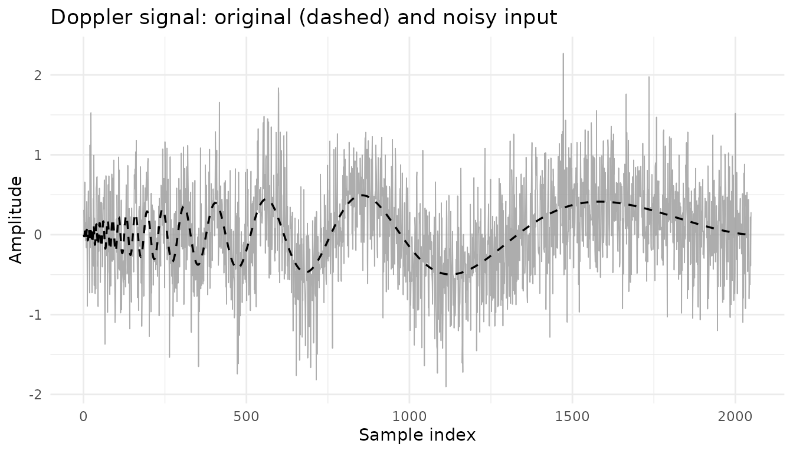
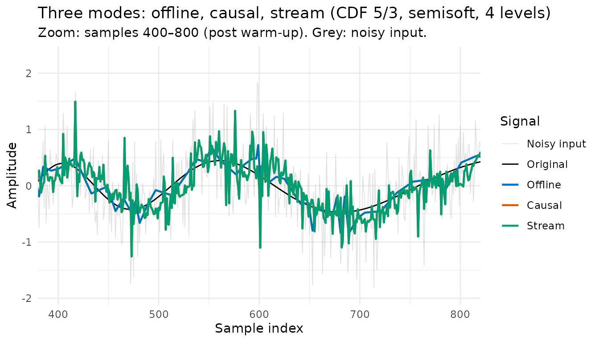

rLifting is a high-performance R package for
wavelet-based signal denoising via the Lifting Scheme (Sweldens, 1996).
It provides three modes of operation (offline, causal, and stream) under
a unified API, with a zero-allocation C++ engine that runs orders of
magnitude faster than comparable R packages.
This vignette introduces the core concepts and walks through the three modes using a Doppler signal.
1. The three modes at a glance
| Mode | Function | Access to future? | Use case |
|---|---|---|---|
| Offline | denoise_signal_offline |
Yes (full signal) | Post-processing, historical analysis |
| Causal | denoise_signal_causal |
No (sliding window) | Backtesting, simulation on historical data |
| Stream | new_wavelet_stream |
No (one sample at a time) | Real-time sensors, live feeds |
All three modes share a common core of parameters
(scheme, levels, shrinkage,
threshold_method, extension), so switching
between them is largely a matter of choosing the function. Modes that
operate on a sliding window (causal and stream) add
window_size and update_freq. Irregular-grid
handling is uniform across the two batch modes (offline and causal both
accept t as a sorted vector of physical positions); the
stream mode takes t_val per call instead, after creating
the processor with irregular = TRUE.
2. Setup
library(rLifting)
if (!requireNamespace("ggplot2", quietly = TRUE)) {
knitr::opts_chunk$set(eval = FALSE)
message("'ggplot2' is required to render plots. Vignette code will not run.")
} else {
library(ggplot2)
}
data("doppler_example", package = "rLifting")
n = nrow(doppler_example)
Figure 1: Doppler signal. The dashed black line shows the underlying signal; the grey line shows the same signal with additive Gaussian noise (sd = 0.5).
3. Choosing a wavelet
Every function in rLifting accepts a
lifting_scheme object. Six built-in wavelets are
available:
lifting_scheme("haar") # Fast; 1 vanishing moment; step-like signals
lifting_scheme("cdf53") # Linear prediction; 2 VM; JPEG 2000 lossless
lifting_scheme("dd4") # Deslauriers-Dubuc (1989) 4-point cubic; 4 VM
lifting_scheme("cdf97") # JPEG 2000 lossy; 4 VM; smoothest reconstruction on smooth signals
lifting_scheme("db2") # Orthogonal; 2 vanishing moments
lifting_scheme("lazy") # Identity split only; for diagnostic usePractical guidance for offline mode — regular grids
(based on the offline slice of data/benchmark_rlifting.rda,
over four Donoho–Johnstone signals at
,
12 thresholding configurations and 5 boundary modes each, with 1000
Monte Carlo replications per cell; irregular-grid recommendations differ
— see Section 7 and vignette("v05-irregular-grids")):
-
cdf53: reliable generalist. Never wins outright on the benchmark, but never far from the winner, and fast. -
haar: best for signals with sharp discontinuities (lowest MSE onblocksby roughly 2×), and the fastest option overall. -
cdf97: lowest MSE on smooth signals (doppler, oscillatory;bumps, spatially inhomogeneous), at the cost of the highest per-sample time. -
db2: wins onheavisine, and a strong alternative when orthogonality matters (energy conservation). -
dd4: consistently underperforms on the regular DJ benchmark even withtune_alpha_beta()and is not recommended as a default. Available for research on irregular grids and high-vanishing-moment applications.
The ranking shifts in causal and stream modes. With
a sliding window of
samples, longer filters spend a larger fraction of their work in the
boundary zone and the per-window
has more variance than the global offline estimate. The benchmark’s
causal/stream slices show haar winning not only on
blocks but also on bumps and
heavisine; cdf97 retains its edge only on
doppler; db2 falls from second/third to fourth
place. Use haar as the default for causal/stream
applications unless the signal is known to be smooth and oscillatory, in
which case cdf97 is still the right choice. The full
mode-by-mode comparison lives in
vignette("v07-benchmarks"); the causal-specific tuning
guidance (window size, update frequency, latency trade-offs) is in
vignette("v03-causal-stream").
For signals on non-uniform grids, the empirical picture in
data(benchmark_rlifting_irregular) is bimodal. On signals
whose irregular sampling actively carries information — the four DJ
classics resampled at non-uniform positions and
blocks_gapped — interpolating wavelets (cdf53,
dd4) deliver modest MSE gains over their position-ignoring
counterparts (median ratio MSEpos/MSEfix in the 0.90–1.05
range). On smooth signals where the irregular structure is incidental
(linear_phys, trend_events),
cdf53 is still the lowest-MSE wavelet when paired with
boundary = "zero", but its median
performance across boundaries collapses (ratios 17×–37× worse than
position-ignoring), because Lagrange-corrected predict steps amplify
high-frequency noise that the uniform-grid approximation would have
ignored. Practical implication: on irregular grids, the boundary choice
carries more weight than on regular grids — see
vignette("v05-irregular-grids") for the full per-signal
table.
The number of decomposition levels sets how many octave
bands are isolated. The hard upper bound is floor(log2(n))
(signal or window length), but the MAD noise estimator needs enough
coefficients at the finest level and the inverse transform stays
well-behaved only while the coarsest residual still holds a reasonable
number of samples. A practical heuristic is to keep the coarsest
residual at 16–32 samples,
i.e. levels ≤ floor(log2(n / 16)). Choose more levels for
signals with strong low-frequency content (smooth oscillations, slow
trends) and fewer for rapidly-varying or short signals.
4. Offline denoising
Offline mode has access to the full signal. With
threshold_method = "universal" (default), it estimates a
single noise variance
from the finest-level details
via MAD and propagates the threshold across levels via the
recursion (Liu, Mi, & Mao, 2014); this is robust under white
Gaussian noise. With threshold_method = "sure", each
decomposition level gets its own MAD-based
and a SURE-optimal
,
which is more flexible when the wavelet is biorthogonal or the noise is
heterogeneous across scales. Both paths run as a single C++ pass (LWT →
threshold → ILWT) with no R allocations.
scheme = lifting_scheme("cdf53")
# Pick a level depth that suits both the full signal (offline) and the
# sliding window (causal/stream); keeps the comparison in Section 8 fair.
levels = 4
offline_clean = denoise_signal_offline(
doppler_example$noisy,
scheme,
levels = levels,
shrinkage = "semisoft", # hard | soft | semisoft (default) | scad
threshold_method = "universal", # universal | sure
extension = "symmetric", # symmetric | periodic | zero | local_linear | one_sided
alpha = 0.3, # threshold decay across levels (universal only)
beta = 1.2 # threshold scale factor (universal only)
)Key parameters:
-
shrinkage:"semisoft"is the recommended default. It reduces bias compared to soft thresholding and avoids the ringing of hard thresholding. Also available:"hard","soft", and"scad"(Antoniadis & Fan, 2001); see Section 4 of the extensions vignette for a visual comparison. -
threshold_method:"universal"(default; VisuShrink finest-level threshold of Donoho & Johnstone, 1994, propagated to coarser levels via the α/β recursion of Liu, Mi, & Mao, 2014, below) or"sure"(SureShrink: per-level SURE-minimising threshold, in which casealphaandbetaare inert). Usetune_alpha_beta()to pick α and β automatically by minimising SURE. -
alpha: controls how the threshold decays from fine to coarse levels via the recursion (Liu, Mi, & Mao, 2014). Smaller values (e.g. 0.1) keep the threshold nearly flat across levels; larger values (e.g. 5) decay aggressively, suppressing coarse-level coefficients. At the threshold is constant across all levels. -
beta: scales the universal threshold (Donoho & Johnstone, 1994). Values above 1.0 increase smoothing; below 1.0 reduce it. -
extension: five boundary modes are available:"symmetric"(default),"periodic","zero","local_linear"(linear extrapolation; neighbourhood size controlled byll_k, default 4), and"one_sided"(asymmetric renormalised filter at the edge; useful in causal mode). Seevignette("v04-boundary-modes")for the full discussion.
5. Causal denoising
Causal mode processes the signal as if samples arrived sequentially:
the output at sample
depends only on the most recent window_size samples
(and never on future samples). The ring buffer evicts older history as
new samples arrive, so memory is bounded to
regardless of total signal length.
window_size = 255 # must be odd; forced odd automatically if even is supplied
causal_levels = levels # same depth as offline for a fair comparison (Section 8)
causal_clean = denoise_signal_causal(
doppler_example$noisy,
scheme,
window_size = window_size,
levels = causal_levels,
shrinkage = "semisoft",
update_freq = 1 # recompute threshold every sample (maximum adaptivity)
)The first window_size − 1 output samples are returned
as-is (the buffer warm-up phase); the window_size-th sample
is the first filtered output. After warm-up, each output is fully causal
and filtered.
window_size is the main tuning parameter: larger windows
give better frequency resolution and more stable threshold estimates,
but increase latency and memory. A value of 128–512 is typical.
update_freq controls how often the adaptive threshold is
recomputed. update_freq = 1 recomputes every sample
(maximum adaptivity, slightly more CPU). For stationary noise,
update_freq = 10–50 reduces overhead without meaningful
accuracy loss.
6. Stream processing
Stream mode processes one sample at a time, maintaining state in a persistent C++ ring buffer. No batch call is needed: each call to the returned closure returns the filtered value immediately.
processor = new_wavelet_stream(
scheme,
window_size = window_size,
levels = causal_levels,
shrinkage = "semisoft",
update_freq = 1
)
stream_clean = numeric(n)
for (i in seq_len(n)) {
stream_clean[i] = processor(doppler_example$noisy[i])
}The processor is stateful: it maintains the ring buffer between calls
and exhibits the same window_size − 1 warm-up phase as
causal mode (raw passthrough until the buffer first fills). Its full
configuration (wavelet, window_size, levels,
extension, irregular, ll_k, and
alpha, beta, shrinkage,
threshold_method, update_freq) is frozen at
creation. To change any parameter, create a new stream.
7. Irregular grids
When samples are not uniformly spaced (accelerometer data with
dropped packets, seismic sensors at irregular positions, financial tick
data), pass the physical time positions via t:
set.seed(42)
n_irr = 512
pure_irr = rLifting:::.generate_signal("doppler", n = n_irr)
x_irr = pure_irr + rnorm(n_irr, sd = 0.2)
# Non-uniform grid: log-normal spacing
t_irr = cumsum(c(0, abs(rnorm(n_irr - 1, mean = 1, sd = 0.4))))
# Interpolating wavelets adapt predict steps to physical positions
sch_irr = lifting_scheme("cdf53")
res_irr = denoise_signal_offline(
x_irr, sch_irr,
levels = 4, t = t_irr
)With t supplied, interpolating wavelets
(cdf53, dd4, haar) replace the
fixed-coefficient predict step with Lagrange interpolation at the actual
sample positions (Daubechies, Guskov, Schröder, & Sweldens, 1999).
Non-interpolating wavelets (db2, cdf97) emit a
warning and fall back to fixed coefficients. Wavelet and boundary
recommendations on irregular grids differ substantially from the
regular-grid guidance in Section 3 — consult
vignette("v05-irregular-grids") for per-signal guidance and
vignette("v07-benchmarks") for the full empirical
comparison.
For stream mode on irregular grids, pass t_val with each
sample:
proc_irr = new_wavelet_stream(
sch_irr, window_size = 127,
levels = 3, irregular = TRUE
)
output_irr = numeric(n_irr)
for (i in seq_len(n_irr)) {
output_irr[i] = proc_irr(x_irr[i], t_val = t_irr[i])
}8. Comparing the three modes
df_plot = data.frame(
index = rep(doppler_example$index, 5),
value = c(
doppler_example$noisy,
doppler_example$original,
offline_clean,
causal_clean,
stream_clean
),
Signal = factor(
rep(c("Noisy input", "Original", "Offline", "Causal", "Stream"), each = n),
levels = c("Noisy input", "Original", "Offline", "Causal", "Stream")
)
)
ggplot(
df_plot,
aes(
x = index, y = value, colour = Signal,
linewidth = Signal, alpha = Signal
)
) +
geom_line() +
scale_colour_manual(
values = c(
"Noisy input" = "grey70",
"Original" = "black",
"Offline" = "#0072B2",
"Causal" = "#D55E00",
"Stream" = "#009E73"
)
) +
scale_linewidth_manual(
values = c(
"Noisy input" = 0.3, "Original" = 0.5,
"Offline" = 0.8, "Causal" = 0.8, "Stream" = 0.8
)
) +
scale_alpha_manual(
values = c(
"Noisy input" = 0.4, "Original" = 1,
"Offline" = 1, "Causal" = 1, "Stream" = 1
)
) +
coord_cartesian(xlim = c(400, 800)) +
theme_minimal() +
labs(
title = "Three modes: offline, causal, stream (CDF 5/3, semisoft, 4 levels)",
subtitle = "Zoom: samples 400–800 (post warm-up). Grey: noisy input.",
x = "Sample index", y = "Amplitude"
)
Figure 2: Output of the three modes on the noisy Doppler signal, zoomed to samples 400–800 (post warm-up). All modes use CDF 5/3, semisoft shrinkage and 4 decomposition levels. The grey line is the noisy input.
What to observe:
-
Offline: uses the full signal and, with the default
threshold_method = "universal", a single global from all finest-level details. With identical level depth across modes, any remaining difference comes from windowing, not from spectral coverage. -
Causal and stream: share the same
WaveletEngineand, for any fixed input signal under matching parameters, produce outputs that agree to within numerical rounding. Choose between them on interface grounds (a batch call over a historical record versus a sample-by-sample closure for live data), not on accuracy. The firstwindow_size − 1samples are returned unfiltered (warm-up); after that, each output depends only on the most recent samples. - Lag and limit: causal and stream lag the offline result slightly during transients (no look-ahead) and never coincide with offline even in stationary regions, because the two are mathematically distinct operations (different sliding-window , different boundary handling at each window’s edge). The closer the local noise to global, the closer the outputs.
Where to go next
| Vignette | Topics |
|---|---|
vignette("v02-thresholding-and-tuning") |
MAD noise estimate, universal vs SURE, α/β intuition,
tune_alpha_beta(), shrinkage choice (hard / soft / semisoft
/ SCAD) |
vignette("v03-causal-stream") |
Window size selection, update_freq tuning,
per-sample latency, causal-specific wavelet recommendations, warm-up
behaviour |
vignette("v04-boundary-modes") |
When each of the five boundary extensions matters;
ll_k for local_linear; one_sided
for real-time |
vignette("v05-irregular-grids") |
Lagrange interpolation in predict steps; wavelet
selection for non-uniform data; offline t vs stream
t_val mechanisms |
vignette("v06-extensions") |
Custom wavelets via lift_step() +
custom_wavelet(); diagnostics; visual comparison of the
four shrinkage functions; low-level pipeline |
vignette("v07-benchmarks") |
Full mode-by-mode empirical comparison; speed and MSE
against wavethresh, adlift, nlt;
ring-buffer speed-up over naive sliding-window |
vignette("v08-case-study") (in
progress) |
End-to-end denoising workflow on a real signal: diagnose, choose wavelet, tune α/β, denoise across the three modes, residual analysis |
References
Antoniadis, A., & Fan, J. (2001). Regularization of wavelet approximations. Journal of the American Statistical Association, 96(455), 939–967.
Cohen, A., Daubechies, I., & Feauveau, J.-C. (1992). Biorthogonal bases of compactly supported wavelets. Communications on Pure and Applied Mathematics, 45(5), 485–560.
Daubechies, I., Guskov, I., Schröder, P., & Sweldens, W. (1999). Wavelets on irregular point sets. Philosophical Transactions of the Royal Society A, 357(1760), 2397–2413.
Deslauriers, G., & Dubuc, S. (1989). Symmetric iterative interpolation processes. Constructive Approximation, 5(1), 49–68.
Donoho, D. L., & Johnstone, I. M. (1994). Ideal spatial adaptation by wavelet shrinkage. Biometrika, 81(3), 425–455.
Liu, Z., Mi, Y., & Mao, Y. (2014). Improved real-time denoising method based on lifting wavelet transform. Measurement Science Review, 14(3), 152–159. DOI: 10.2478/msr-2014-0020.
Sweldens, W. (1996). The lifting scheme: A custom-design construction of biorthogonal wavelets. Applied and Computational Harmonic Analysis, 3(2), 186–200.